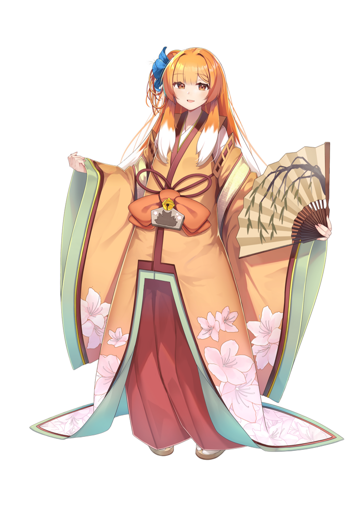
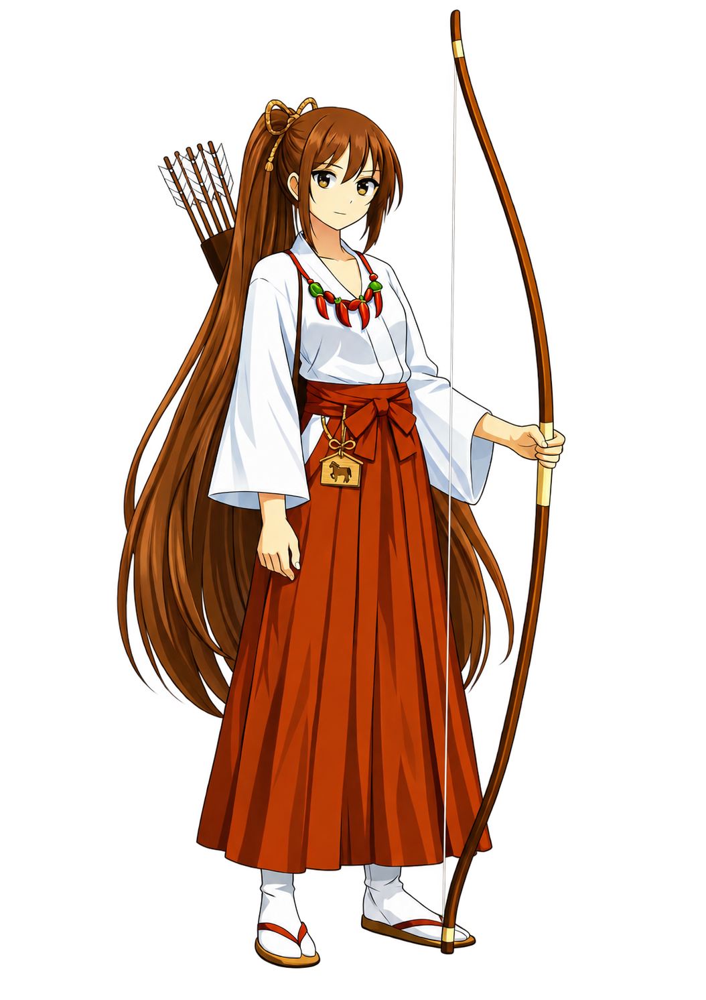
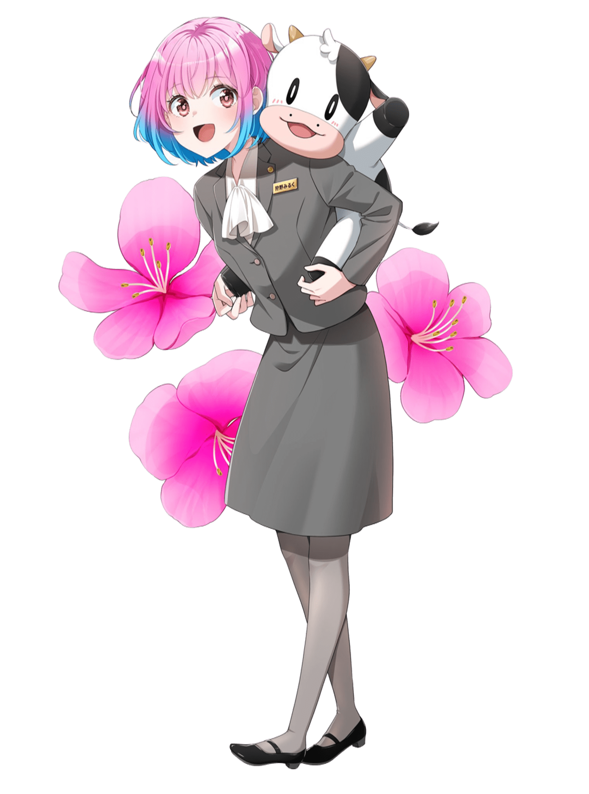

第1章
地域の魅力を、伝わる形にする
人が商品や場所を選ぶ背景には、そこで得られる体験や変化があります。ご縁ガールは、地域の魅力や店舗の想いをキャラクターを通じて伝え、人と地域をつなぐ新しいきっかけをつくります。
GOEN GIRL / LOCAL CHARACTER IP
地域の魅力を、来店・来訪のきっかけに変える。
ご縁ガールは、地域の魅力はあるのに、来店・来訪のきっかけづくりや継続的なSNS発信に課題を抱える地域ビジネスのためのキャラクターIPです。等身大パネル、キャラクターグッズ、SNS動画配信を一体でお届けし、現地で目に留まる体験と、SNSで続く話題をつくります。地域に人が訪れる「ご縁」の入口として活用できます。

那須町 那須乃つつじ
OUR ORIGIN
あるお寺での会話でした。
「昔は、お祭りにたくさんの方が来ていただいた。
最近では、どんどん少なくなっている。
このままでは、地域のお祭りや、地域のつながりもなくなってしまう。」
昔から、ご縁をいただいて、太陽、自然の営み、食へのありがたさ、ご近所づきあいへの感謝、様々なご縁で生かされていたことへの、感謝の気持ち。
ご縁や愛が、少なくなっている気がする。
— ご縁ガールを通して、人と人、人と企業や店舗へのご縁をつなぎ、豊かな地域、そして、豊かな日本にしていきたい。
そんな想いから、ご縁ガールは始まりました。
CHALLENGES
WHY GOEN GIRL
第1章
人が商品や場所を選ぶ背景には、そこで得られる体験や変化があります。ご縁ガールは、地域の魅力や店舗の想いをキャラクターを通じて伝え、人と地域をつなぐ新しいきっかけをつくります。
第2章
同一キャラクターが各地で働いている設定で、ファンは推しキャラのために新しい店舗・寺社を訪ねます。御朱印級の限定アイテムで収集欲を満たし、地域内回遊が生まれます。

第3章
ご縁ガール運営事務局が、地域・店舗のミッション・ビジョン・コンセプトを反映した縦型ショート動画を毎月4本制作。月内の来店タイミングと連動した配信で、来店の動線を作ります。

第4章
導入店舗には等身大パネルを設置。缶バッジ・アクリルスタンド・御朱印カードなどの限定グッズを同時展開できます。推し活ニーズとご当地コレクション需要を同時に満たします。
CHARACTERS
那須町
九尾の狐伝説や殺生石の物語が語り継がれる歴史の町、那須町の守護少女。豊かな自然が育む絶品の那須和牛や濃厚なチーズ、フレッシュな高原牛乳など美味しいものには目がないグルメ少女。雄大な那須連山の自然と歴史の魅力を温かい笑顔で元気いっぱいお届けします。
大田原市
大田原市の歴史を宿す守護少女。明るく一本気な性格で、一矢必中の精神を持つ努力家。地元名産の「お米」と「鮎の塩焼き」が大好物！「とうがらしソフト」を食べてるときは我を忘れて夢中になる。大俵のように皆に福を届けるため大田原市の魅力を元気に発信中。
那須塩原市
自然豊かで生乳生産量本州一を誇る那須塩原市の守護ガール。牧場のミルクシェイクやチーズケーキ、ヤシオマスのお寿司が好物でどこにでも一人で出掛けてしまうアウトドア派。地元で2年に一度開催される花火大会をはじめ毎年恒例の多くのイベントを楽しみに日々の活動をしています。那須塩原の食や自然の魅力を全力で発信していきます。
SNS VIDEO SAMPLES
ご縁ガールのPR動画制作・SNS配信サービスのサンプルです。
那須町のご縁ガール
那須塩原市のご縁ガール
大田原市のご縁ガール
動画の転載・二次利用はお控えください。
HOW IT WORKS
ページ内フォームから入力
2営業日以内にご連絡
衣装バリエーションを決定
パネル設置 + PR動画制作・SNS配信
PLANS
※ご縁ガール契約は、1年間の契約とさせていただきます。
※ 中途解約は契約期間中できません（やむを得ない事情により運営が認めた場合、月払いの場合は有料期間の未払残額を一括ご請求、一括前払金は返金いたしかねます）。
※ パネル回収・グッズ回収にかかる費用は個別申込書で定めます。
※ グッズ制作費用は、別途お見積りとなります。
ここに記載するのは契約書の重要事項の抜粋です。正式な契約条件は個別申込書・見積書・別紙で定めます。
FAQ
キャラ使用料は原則無償です。月額利用料金に含まれます。
ご縁ガールの世界観に沿う業種の皆さまにご導入いただけます。寺社、ホテル・旅館、飲食店、小売・物販、観光・レジャー、自治体・DMOなど。審査がございますので、まずはご相談フォームからお寄せください。
ご縁ガールの世界観で、複数の地域・店舗ごとの衣装バリエーションが展開されます。同名キャラが地域で働いている設定は、ファンの回遊動機の源泉になります。
制作と配信は運営事務局が行います。店舗さまのSNSアカウントでは、運営投稿の公式共有・URL案内としてご活用ください。
事前に解約のお申し込みがない場合は、自動更新となります。解約する際は、12ヶ月契約満了の30日前までに書面でお申し出ください。中途解約は原則不可です（やむを得ない事情で運営が認める場合を除く）。
契約終了後10営業日以内に、画像データの削除、パネル回収、グッズ回収などが必要です。回収費用は個別申込書で明記します。
CONTACT
地域との新しいご縁を、ここから始めませんか。内容を確認後、2営業日以内に担当者よりご連絡します。